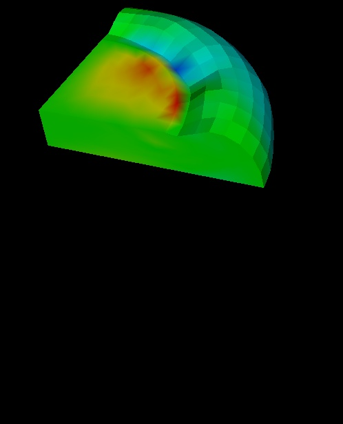
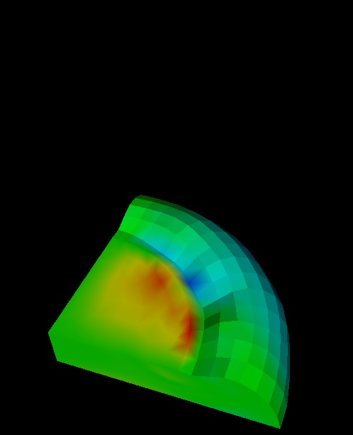

Pan

This command is identical to the "pan" in the interactive mode, except the panning is controlled via command line arguments instead of the mouse. Here is a simple pan of the camera in the y-direction.
Ex: vtk> Pan y -1
